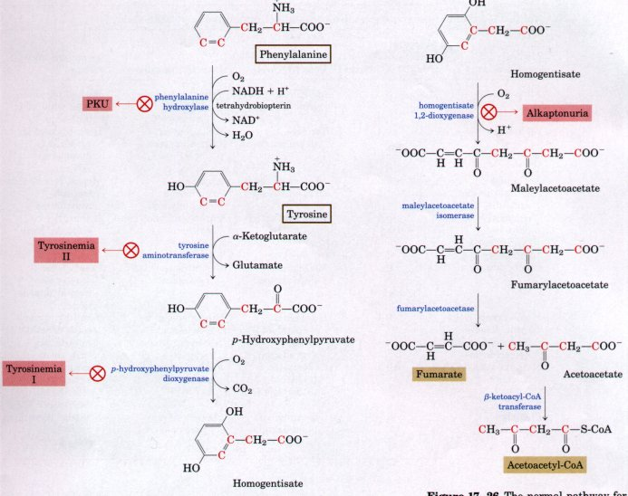
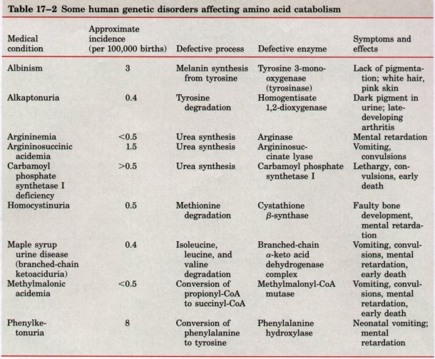
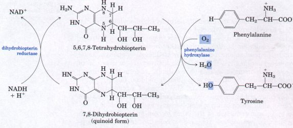
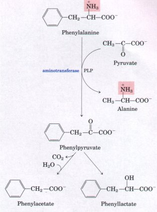
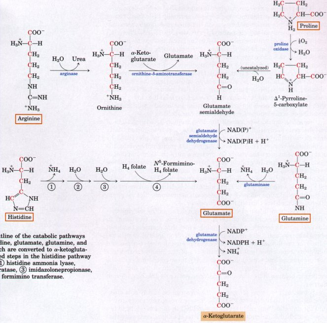

Many different genetic defects in amino acid metabolism have been identified in humans (Table 17-2, p. 530). Most such defects cause specific intermediates to accumulate, a condition that can cause defective neural development and mental retardation.

Figure 17-26 The normal pathway for conversion of phenylalanine and tyrosine into acetoacetyl-CoA and fumarate in humans. Genetic defects in each of the first four enzymes in this pathway are known to cause inheritable human diseases (shaded in red).
The first enzyme in the catabolic pathway for phenylalanine (Fig. 17-26), phenylalanine hydroxylase, catalyzes the hydroxylation of phenylalanine to tyrosine. A genetic defect in phenylalanine hydroxylase is responsible for the disease phenylketonuria (PKU). Phenylketonuria is the most common cause of elevated levels of phenylalanine (hyperphenylalaninemia). Phenylalanine hydroxylase inserts one of the two oxygen atoms of O2 into phenylalanine to form the hydroxyl group of tyrosine; the other oxygen atom is reduced to H2O by the NADH also required in the reaction. This is one of a general class of reactions catalyzed by enzymes called mixed-function oxidases (see Box 20-1), all of which catalyze simultaneous hydroxylation of a substrate by O2 and reduction of the other oxygen atom of O2 to H2O. Phenylalanine hydroxylase requires a cofactor, tetrahydrobiopterin, which carries electrons from NADH to O2 in the hydroxylation of phenylalanine. During the hydroxylation reaction the coenzyme is oxidized to dihydrobiopterin (Fig. 17-27). It is subsequently reduced again by the enzyme dihydrobiopterin reductase in a reaction that requires NADH.


Figure 17-27 The role of tetrahydrobiopterin in the reaction catalyzed by phenylalanine hydroxylase. Note that NADH is required to restore the reduced form of the coenzyme.
When phenylalanine hydroxylase is genetically defective, a secondary pathway of phenylalanine metabolism, normally little used, comes into play. In this minor pathway phenylalanine undergoes transamination with pyruvate to yield phenylpyruvate (Fig. 17-28). Phenylalanine and phenylpyruvate accumulate in the blood and tissues and are excreted in the urine: hence the name of the condition, phenylketonuria. Much of the phenylpyruvate is either decarboxylated to produce phenylacetate or reduced to form phenyllactate. Phenylacetate imparts a characteristic odor to the urine that has been used by nurses to detect PKU in infants. The accumulation of phenylalanine or its metabolites in early life impairs the normal development of the brain, causing severe mental retardation. Excess phenylalanine may compete with other amino acids for transport across the blood-brain barrier, resulting in a depletion of some required metabolites. |
 Figure 17-28 Alternative pathways for catabolism of phenylalanine in phenylketonurics. Phenylpyruvate accumulates in the tissues, blood, and urine. Phenylacetate and phenyllactate can also be found in the urine. |
Phenylketonuria was among the first human genetic defects of metabolism discovered. When this condition is recognized early enough in infancy, mental retardation can largely be prevented by rigid dietary control. The diet must supply just enough phenylalanine and tyrosine to meet the needs for protein synthesis. Consumption of foods that are rich in protein must be curtailed, and warnings are listed on foods artificially sweetened with aspartame (a dipeptide of the methyl ester of phenylalanine and aspartate; see Fig. 3-13). Natural proteins, such as casein of milk, must first be hydrolyzed and much of the phenylalanine removed to provide an appropriate diet for phenylketonurics, at least through childhood.
Phenylketonuria can also be caused by a defect in the enzyme that catalyzes the regeneration of tetrahydrobiopterin. The treatment in this case is more complex than providing a diet that restricts intake of phenylalanine and tyrosine. Because tetrahydrobiopterin is also required for the formation of L-3,4-dihydroxyphenylalanine (L-dopa) and 5-hydroxytryptophan (essential precursors of the neurotransmitters norepinephrine and serotonin, respectively), these compounds must be supplied in the diet. Supplying tetrahydrobiopterin in the diet is insufficient because it is unstable and does not cross the blood-brain barrier.
Screening newborns for genetic diseases can be highly cost-effective, especially in the case of PKU. The tests are relatively inexpensive, and the detection and early treatment of PKU in infants (eight to ten cases per 100,000 individuals) saves millions of dollars each year that would otherwise be spent on institutionalized care and special programs to address the mental retardation. The human emotional trauma avoided by these simple tests is, of course, inestimable.
People who inherit a genetic defect in another of the enzymes in the phenylalanine catabolic pathway, homogentisate dioxygenase, are more fortunate than those with PKU. The defect results in no serious ill effects (although these individuals excrete large amounts of homogentisate, which is rapidly oxidized and turns the urine black), but it has historical importance. This defect, called alkaptonuria, was studied by Archibald Garrod in the early 1900s. Garrod discovered that the condition was inherited, and he could trace it to the absence of a single enzyme. Garrod was the first to make a connection between an inheritable trait and an enzyme, a major advance on the path that ultimately led to our current understanding of genes and the information pathways described in Part IV of this book.

Figure 17-29 Outline of the catabolic pathways for arginine, histidine, glutamate, glutamine, and proline, all of which are converted to α-ketoglutarate. The numbered steps in the histidine pathway are catalyzed by (l) histidine ammonia lyase, (2) urocanate hydratase, (3) imidazolonepropionase, and (4) glutamate formimino transferase.
The carbon skeletons of five amino acids (arginine, histidine, glutamate, glutamine, and proline) enter the citric acid cycle via α-ketoglutarate (Fig. 17-29). Proline, glutamate, and glutamine have five-carbon skeletons. The cyclic structure of proline is opened by oxidation of the carbon most distant from the carboxyl group to create a Schiff base and hydrolysis of the Schiff base to a linear semialdehyde (glutamate semialdehyde). This is further oxidized at the same carbon to produce glutamate. The action of glutaminase, or any of several reactions in which glutamine donates its amide nitrogen to some acceptor, converts glutamine to glutamate. Transamination or deamination of glutamate produces the citric acid cycle intermediate α-ketoglutarate.
Arginine and histidine contain five adjacent carbons and a sixth carbon attached through a nitrogen atom. The catabolic conversion of these two amino acids to glutamate is therefore slightly more complex than the path from proline or glutamine to glutamate (Fig. 17-29). Arginine is converted to the five-carbon skeleton of ornithine in the urea cycle (see Fig. 17-11), and the ornithine is transaminated to glutamate semialdehyde. The conversion of histidine to the five-carbon glutamate occurs in a multistep pathway; the extra carbon is removed in a step that employs tetrahydrofolate as a cofactor (Fig. 17-29).